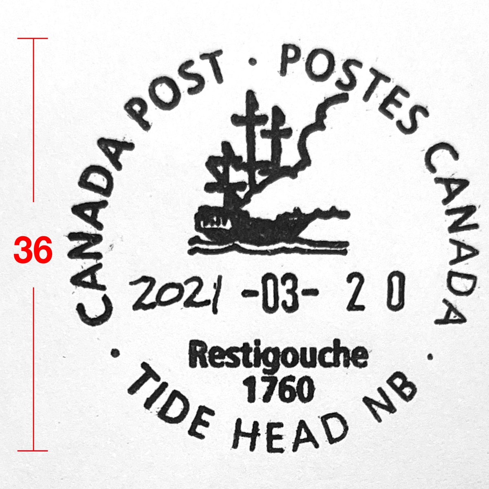

Tide Head PO pictorial cancel
Restigouche 1760
- Status
- Expired
- Run dates
- 2010-01-01 to 2021-12-31
- Design
- "Restigouche 1760"; battle, history, ship, navy
- Ink colour
- Black
- Designer
- Unknown
- Post office
- Tide Head PO
244 Restigouche Drive
Tide Head, NB
E3N 1K0 - Subjects
- battle, war, history, ship, navy, NHS
This cancel is retired, so the post office can no longer apply it. Covers with it turn up from dealers and other collectors.
 Beresford Main POSatyre fauve des Maritimes
Beresford Main POSatyre fauve des Maritimes New Denmark POOldest Danish Settlement in Canada
New Denmark POOldest Danish Settlement in Canada Grand Falls Grand-Sault POFalls and Gorge / Chute et Gorge
Grand Falls Grand-Sault POFalls and Gorge / Chute et Gorge Plaster Rock POWorld Pond Hockey Championship
Plaster Rock POWorld Pond Hockey Championship Juniper POTrain, fish, trees
Juniper POTrain, fish, trees